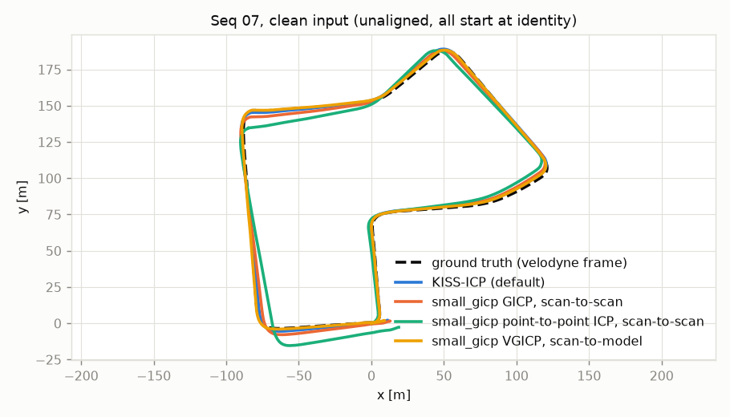

KITTI sequence 07: trajectory error (top) and 10 m relative error (bottom) against each degradation, four odometry front ends. × = diverged (KITTI drift above 10%). Click to enlarge.
Question
Where do LiDAR odometry front ends break when the input gets worse? The degradations tested are fewer beams, dropped points, range
noise, a shorter maximum range, and a lower scan rate. The answer says which sensor downgrade a LiDAR SLAM stack can absorb
and which it can't. The study follows the same format as my SfM study: controlled degradations of real data,
seeded runs, and the limits stated next to the numbers.
Approach
Data: real Velodyne HDL-64E scans from KITTI odometry sequences 04 (271 scans, 394 m of straight road) and 07 (1101 scans, a 694 m residential loop). Ground truth is moved into the LiDAR frame with each sequence's calibration, and the frame alignment is checked against the timestamps at load time.
Degradations, one at a time:
Beam decimation from 64 to 8 rings. The ring index is recovered from the scan's storage order and checked against elevation.
Random dropout up to 90%.
Gaussian range noise up to 10 cm.
Max-range truncation from 80 m down to 10 m.
Scan rate from 10 Hz down to 1.25 Hz.
Random degradations use two seeds, with identical draws for every method.
Methods: KISS-ICP 1.3.0 (default config), plus three small_gicp variants: GICP scan-to-scan, point-to-point ICP scan-to-scan, and VGICP registering against a local Gaussian voxel map. VGICP is the map-keeping GICP, so it separates "map vs. no map" from the cost function.
Scoring: evo trajectory error (ATE, SE(3)-aligned), 10 m and 50 m relative error, and the KITTI drift metric. A run counts as diverged above 10% drift.
Key Results
≤ 1.1%
Drift with 90% of points randomly dropped (seq 04; KISS-ICP 0.52%, GICP ≤ 1.09%)
100% → 7.0%
KISS-ICP drift at a 20 m max range once its config knows the range (seq 04; GICP 2.2%)
0.48%
Best clean drift: GICP with a local map (VGICP) on seq 07; KISS-ICP 0.70%
89–100% → ≤ 1.3%
Every method at 2.5 Hz on seq 04 once its first registration starts from the true motion: a start-up failure, not a tracking limit
How points are removed matters more than how many. 90% random dropout leaves 12.6k points per scan, fewer than the 16.1k left at 8 rings. Yet under dropout scan-to-scan GICP drifts about 1.1%, while at 8 rings it diverges (64.8%, seq 04). Range noise up to σ = 10 cm barely moves any method.
Fewer rings: KISS-ICP barely notices, and GICP does whether or not it keeps a map. On seq 04, KISS-ICP drifts 0.61% at 8 rings. Scan-to-scan GICP diverges at 8 rings, and VGICP already at 16 (26.7%).
Short range favours GICP, but less than it first looked.
KISS-ICP's default config uses 1 m voxels, sized for a 100 m sensor.
Told the truncated range instead, its drift at 20 m on seq 04 falls from 100.5% to 6.99%. That is still behind GICP (2.23%) and VGICP (2.25%).
At 10 m every method fails on seq 04. On seq 07 at 10 m, GICP keeps 5.80% and range-matched KISS-ICP 9.27%.
Some low-rate failures happen at start-up. On seq 04 every method diverged at 2.5 Hz when starting from a zero-motion guess. Seeding each method's first registration from ground truth brings all four back to 0.43–1.38% drift, even at 1.25 Hz with about 12 m between scans. On seq 07 at 1.25 Hz, seeding doesn't help (GICP 9.0%, VGICP 61%): that is a real tracking limit on a route with turns.
The KISS-ICP baseline is fair. Its poses match kiss-icp's own KITTI pipeline to 2e-13. Deskewing each scan with azimuth timestamps wasn't a consistent win, so the official configuration stays the baseline.
Clean-Input Baseline
Method
Seq 04 drift
Seq 04 ATE
Seq 07 drift
Seq 07 ATE
KISS-ICP (default)
0.46%
0.20 m
0.70%
0.63 m
GICP, scan-to-scan
0.52%
0.34 m
1.19%
1.29 m
VGICP, scan-to-model
0.50%
0.42 m
0.48%
0.45 m
Point-to-point ICP, scan-to-scan
2.16%
1.09 m
2.65%
4.05 m

Sequence 07, clean input: every method starts at identity, with no alignment.
Sequence 04 (straight road): the same sweep. Click to enlarge.
Limitations
Two sequences, with nothing averaged across them.
Synthetic degradations of real scans.
Dropout is random per point, while real dropout is structured.
Range noise is Gaussian.
Truncation doesn't add the spurious near returns that fog and dust produce.
Decimated rings keep the HDL-64E's elevation pattern, not that of a real 16- or 32-beam sensor.
Defaults, not tuned systems: nothing was re-tuned per degradation, apart from the range-matched KISS-ICP check.
Timing isn't reported here: one run per condition on a shared laptop.
No IMU yet: LiDAR-inertial methods such as FAST-LIO2 are the next comparison.
How It Was Built
run_all.sh does everything from the repo: a self-check, the download from the official KITTI mirror, extraction, the sweep, and the plots. Each run adds one CSV row.
The ring recovery and the degradations are tested on synthetic scans. Frame alignment and the 64-ring structure are asserted on every scan at load time.
Data license: KITTI is CC BY-NC-SA 3.0. No KITTI data is redistributed; the figures on this page are derived from KITTI and shared under the same terms. The code is MIT.
Next Steps
LiDAR-inertial odometry (FAST-LIO2) on a dataset with IMU data.
More sequences, averaged.
Real degraded data (rain, fog, dust) instead of synthetic degradations.